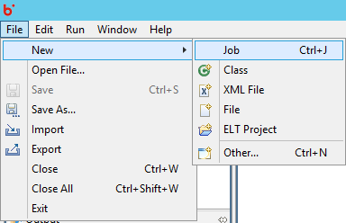
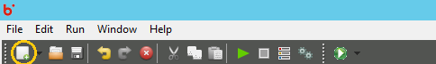

Hydrograph Help
Hydrograph Help
How to Create a Job
Hydrograph Release Version 1.0
To Create a job in Hydrograph, users have been provided with options in the File menu and the Tool bar. Under the File Menu -> New -> Job, creates a new job on the Canvas.

Users can alternatively click on the Tool bar button to create a new Job.
